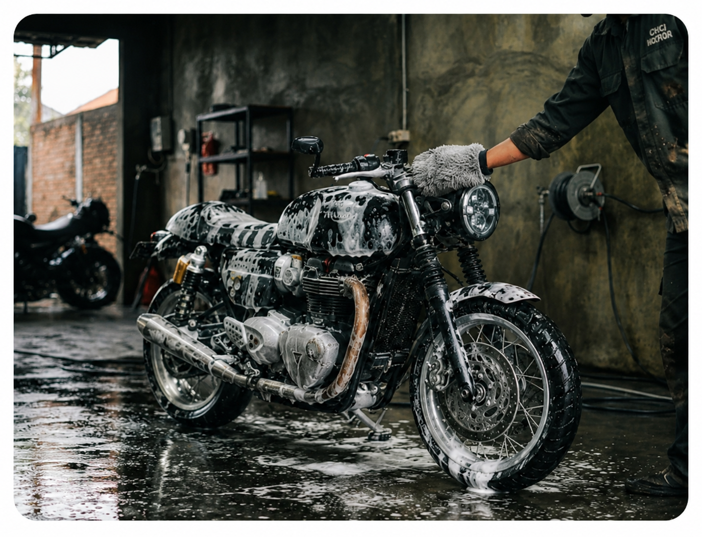

● CUCI MOTOR, NAIK KELAS.
Dari debu jalanan sampai kilap maksimal. Rawat motor kesayangan tanpa ribet, tanpa antre lama.
Mulai Rp20.000 • Buka setiap hari, 08.00–20.00

Detail kecil, perhatian besar.
Aman untuk motor kesayangan.
Hasil rapi, bukan asal cepat.
Duduk santai, motor kami rawat.
LAYANAN & HARGA
Dua roda, banyak cerita. Satu tempat untuk merawatnya.
Bersih segar untuk rutinitas harian.
Perawatan ekstra, kilap lebih lama.
Kembalikan pesona motor kesayangan.
* Contoh harga untuk motor matic & bebek. Motor besar menyesuaikan ukuran dan kondisi.
Tentukan perawatan dan jam kedatangan lewat WhatsApp.
Datang sesuai jadwal. Tim kami siap merawat motormu.
Cek hasilnya, selesaikan pembayaran, dan lanjutkan harimu.
CERITA PENGENDARA
"Habis kena hujan seminggu, akhirnya motor bersih lagi. Sampai sela velg juga diperhatikan!"
"Booking dulu jadi nggak perlu menunggu lama. Tempatnya nyaman, hasil cucinya juga rapi."
"Paling suka finishing-nya. Bodi kelihatan segar lagi, detail mesin juga jauh lebih bersih."
SEBELUM KAMU DATANG
Ini beberapa hal yang sering ditanyakan. Ada pertanyaan lain? Yuk, ngobrol dulu.
Keduanya bisa. Booking disarankan supaya kamu bisa memilih waktu dan mengurangi antrean.
Sekitar 20–35 menit untuk cuci reguler dan premium. Detailing membutuhkan sekitar 90 menit.
Bisa untuk motor matic, bebek, hingga motor besar. Harga motor besar disesuaikan dengan ukuran dan kondisinya.
MOTOR KOTOR? KAMI SIAP.
Pilih waktumu. Biar urusan bersih jadi urusan kami.